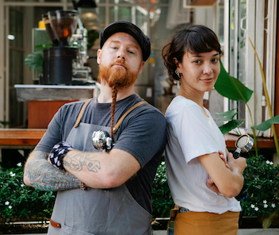

Acerca de Cavero
CAVERO nace de la unión entre el amor por el buen café y la pasión por las plantas. Somos Lali y Lucas, una pareja que soñó con crear un espacio donde la naturaleza, el diseño y la experiencia sensorial se fusionan en cada rincón.
"Los que soñaron Cavero y hoy lo hacen realidad."
Nuestra historia
Todo comenzó con una taza de café y una charla que, como muchas otras, soñaba con una vida más simple, más natural y con sentido. En Cavero confluyen nuestras pasiones: el amor por el diseño, el contacto con la naturaleza, la cultura del café y el deseo de crear un espacio con alma.
Venimos de mundos distintos: Lali, del arte, el paisajismo y la comunicación visual; Lucas, de la tecnología, la eficiencia y la resolución práctica. Pero nos une una forma de mirar la vida: valoramos la belleza en lo cotidiano, lo hecho con cuidado, y los espacios donde se puede respirar tranquilidad.
Después de años de experiencia en nuestros rubros, decidimos crear algo que nos represente por completo. Así nació CAVERO: una cafetería de autor que convive con un vivero. Un espacio de encuentro donde se puede venir a trabajar, a leer, a encontrarse con otros o simplemente a conectar con uno mismo.
No buscamos ser un local más: queremos que cada persona que cruce la puerta sienta que entra a un lugar cuidado, honesto y lleno de vida.
“Creemos en los detalles, en lo natural, en la pausa. En el café como ritual y en las plantas como compañía.”

"Un rincón de aroma a café y verde."
Cada rincón de Cavero está diseñado con intención. Desde la elección de las plantas que nos rodean hasta el aroma del café recién molido, todo forma parte de una experiencia que invita a bajar el ritmo. Nuestro espacio no es solo una cafetería ni solo un vivero: es un refugio cotidiano donde el diseño, la naturaleza y los pequeños rituales se encuentran para brindarte una pausa real. Queremos que, al cruzar la puerta, sientas que llegaste a un lugar en el que podés ser vos mismo.
Café de especialidad
Trabajamos con granos seleccionados de origen y tostado reciente. Cada taza es elaborada con técnica, respeto por el producto y mucho amor. Queremos que el ritual del café sea un momento para conectar con vos mismo y con los sabores auténticos.
Amor por lo natural
Compartimos el espacio con un vivero que respira vida. Plantas, flores, aromas y texturas forman parte de la experiencia Cavero. Creemos en lo orgánico, en el cuidado del entorno y en crear un oasis en medio de la ciudad.
Atención cercana
Nos gusta conocer a quienes nos visitan, recordar su pedido y hacerlos sentir parte. Queremos que Cavero sea tu segundo hogar: un lugar donde siempre haya una sonrisa, una charla amable y un rincón esperando por vos.